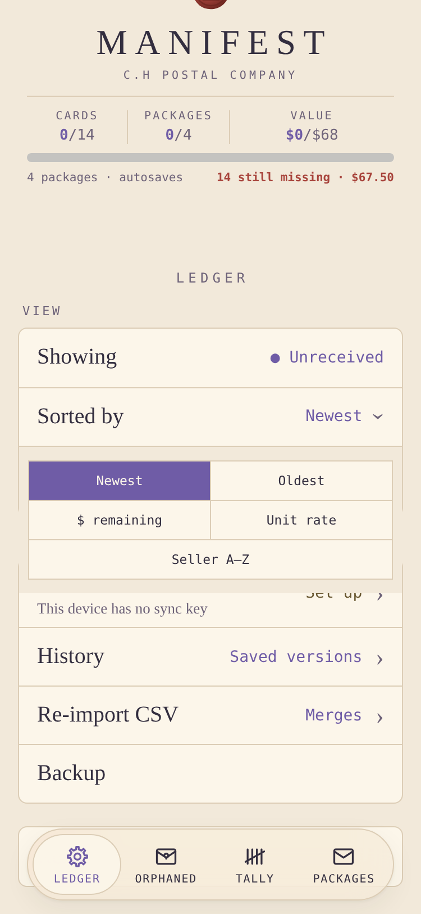
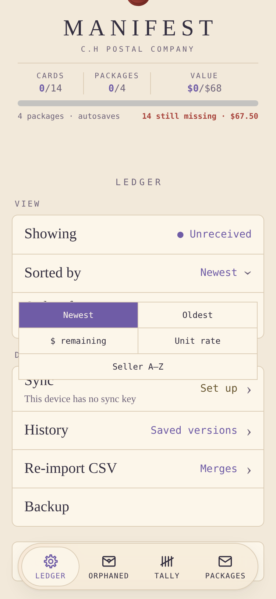
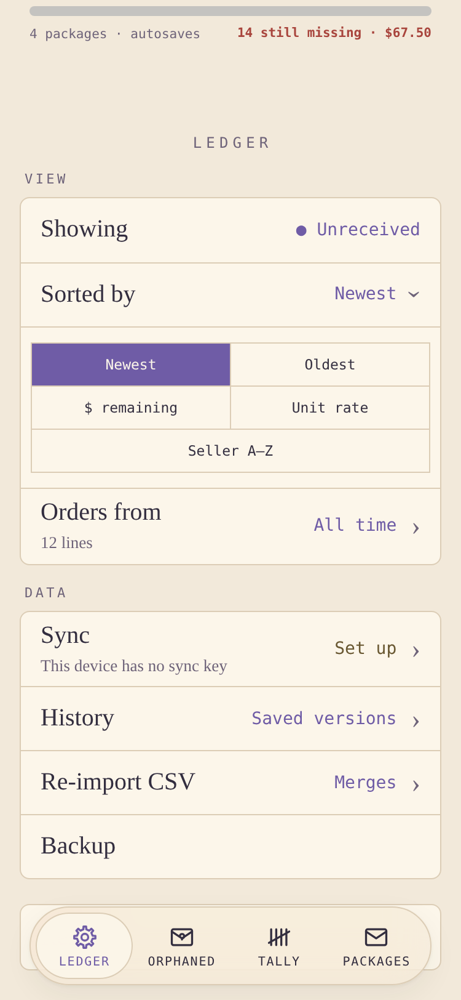

Panel paper fill
Waiting item 63, panel-paper-fill. Should an overlay panel on the Ledger tab paint the paper colour, so the rows under it stop showing through? Every frame but the last draws the overlay the owner ruled on 2026-10-11 (motion-disclosure-panels-arrive). That overlay is not built yet, so a style override draws it here. Only the panel's fill differs between the options.
Paper fill the item's first option


No fill the item's second option


Paper fill, ruled foot designer's variant, not on the item

line rule under the panel. The rule closes the cut edge with the region's own hairline. The row under it is still cut.As built today for reference, not an option


Sizes and sources
- Widths 375 and 760 px, height 812:
WIDTHSandopenSeededin test/screens.mjs. Device scale 2. - One theme, light: shared/tokens.json holds one palette, and src/app.jsx has no dark rule.
- Panel style:
panelWrapin src/app.jsx (padding 4px 8px 12px, top ruleline, no background). Callers: the Sorted by and Orders from panels in the View card, and the Sync, Recent and History panels in the Data card. - Paper:
paper#F2E9DA. The Ledger cards arecard#FCF6EA (.mdl-lcard), so a paper panel reads darker than the card it opens from. - The overlay is drawn by a style override, not built: the panel is absolute at its own place in flow, as wide as its card, over the rows. The card drops
overflow: hiddenso the panel can pass its foot. That geometry is this mockup's guess; motion-disclosure-panels-arrive gives no geometry. - Row tops are read from the page. They are the same in all three overlay frames at each width, so the fill and the rule move nothing (no-layout-shift-under-pointer).
- Unmeasured: the Sync and Recent panels (no sync key and no recent taps in the fixture), the Orders from panel, and touch-device rendering.